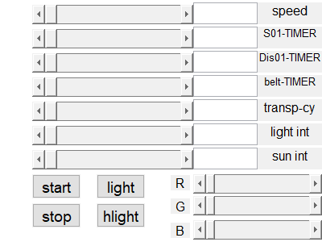
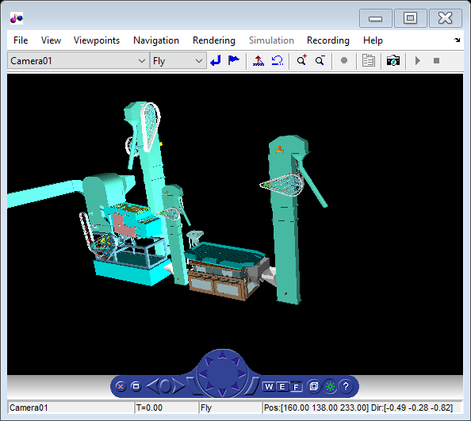

function gui3()
clc global tv1 ; tv1 = 0 ; global flg_light ; flg_light = 0 ; global flg_hlight ; flg_hlight = 0 ; global a11; global b11; hFig = figure('Toolbar','none','Menubar', 'none',... 'Name','gui1','Resize','off','CloseRequestFcn',{@my_closereq},... 'Position',[750 40 400 300],'Color',[0.6 0.6 0.6]); s0 = uicontrol('Style','slider','Callback', {@s0_callback},'FontSize',14,... 'Units','normalized','Position',[0.1 0.9 0.5 .08],'Max',10,... 'Min',0,'SliderStep',[0.01 0.10]); sv0 = uicontrol(gcf,'Style','edit','FontSize',12,'String','',... 'Units','normalized','Position',[0.6 0.9 0.2 .09],'BackgroundColor','w'); sv00 = uicontrol(gcf,'Style','text','FontSize',12,'String','speed',... 'Units','normalized','Position',[0.8 0.9 0.2 .09]); s1 = uicontrol('Style','slider','Callback', {@s1_callback},'FontSize',14,... 'Units','normalized','Position',[0.1 0.8 0.5 .08],'Max',10,... 'Min',0,'SliderStep',[0.01 0.10]); sv1 = uicontrol(gcf,'Style','edit','FontSize',12,'String','',... 'Units','normalized','Position',[0.6 0.8 0.2 .09],'BackgroundColor','w'); sv1l = uicontrol(gcf,'Style','text','FontSize',10,'String','S01-TIMER',... 'Units','normalized','Position',[0.8 0.8 0.2 .09]); s2 = uicontrol('Style','slider','Callback', {@s2_callback},'FontSize',14,... 'Units','normalized','Position',[0.1 0.7 0.5 .08],'Max',10,... 'Min',0,'SliderStep',[0.01 0.10]); sv2 = uicontrol(gcf,'Style','edit','FontSize',12,'String','',... 'Units','normalized','Position',[0.6 0.7 0.2 .09],'BackgroundColor','w'); sv2l = uicontrol(gcf,'Style','text','FontSize',10,'String','Dis01-TIMER',... 'Units','normalized','Position',[0.8 0.7 0.2 .09]); s3 = uicontrol('Style','slider','Callback', {@s3_callback},'FontSize',14,... 'Units','normalized','Position',[0.1 0.6 0.5 .08],'Max',10,... 'Min',0,'SliderStep',[0.01 0.10]); sv3 = uicontrol(gcf,'Style','edit','FontSize',12,'String','',... 'Units','normalized','Position',[0.6 0.6 0.2 .09],'BackgroundColor','w'); sv3l = uicontrol(gcf,'Style','text','FontSize',10,'String','belt-TIMER',... 'Units','normalized','Position',[0.8 0.6 0.2 .09]); s4 = uicontrol('Style','slider','Callback', {@s4_callback},'FontSize',14,... 'Units','normalized','Position',[0.1 0.5 0.5 .08],'Max',1,... 'Min',0,'SliderStep',[0.01 0.10]); sv4 = uicontrol(gcf,'Style','edit','FontSize',12,'String','',... 'Units','normalized','Position',[0.6 0.5 0.2 .09],'BackgroundColor','w'); sv4l = uicontrol(gcf,'Style','text','FontSize',12,'String','transp-cy',... 'Units','normalized','Position',[0.8 0.5 0.2 .09]); s5 = uicontrol('Style','slider','Callback', {@s5_callback},'FontSize',14,... 'Units','normalized','Position',[0.1 0.4 0.5 .08],'Max',10,... 'Min',0,'SliderStep',[0.01 0.10]); sv5 = uicontrol(gcf,'Style','edit','FontSize',12,'String','',... 'Units','normalized','Position',[0.6 0.4 0.2 .09],'BackgroundColor','w'); sv5l = uicontrol(gcf,'Style','text','FontSize',12,'String','light int',... 'Units','normalized','Position',[0.8 0.4 0.2 .09]); s6 = uicontrol('Style','slider','Callback', {@s6_callback},'FontSize',14,... 'Units','normalized','Position',[0.1 0.3 0.5 .08],'Max',10,... 'Min',0,'SliderStep',[0.01 0.10]); sv6 = uicontrol(gcf,'Style','edit','FontSize',12,'String','',... 'Units','normalized','Position',[0.6 0.3 0.2 .09],'BackgroundColor','w'); sv6l = uicontrol(gcf,'Style','text','FontSize',12,'String','sun int',... 'Units','normalized','Position',[0.8 0.3 0.2 .09]); start_wrl = uicontrol('String','start','Callback', {@start_wrl_callback},'FontSize',14,... 'Units','normalized','Position',[0.1 0.18 0.15 .1]); stop_wrl = uicontrol('String','stop','Callback', {@stop_wrl_callback},'FontSize',14,... 'Units','normalized','Position',[0.1 0.06 0.15 .1]); light_wrl = uicontrol('String','light','Callback', {@light_wrl_callback},'FontSize',14,... 'Units','normalized','Position',[0.3 0.18 0.15 .1]); hlight_wrl = uicontrol('String','hlight','Callback', {@hlight_wrl_callback},'FontSize',14,... 'Units','normalized','Position',[0.3 0.06 0.15 .1]); r1 = uicontrol('Style','slider','Callback', {@rgb_callback},'FontSize',14,... 'Units','normalized','Position',[0.6 0.2 0.4 .08],'Max',1,... 'Min',0,'SliderStep',[0.01 0.10]); r1l = uicontrol(gcf,'Style','text','FontSize',12,'String','R',... 'Units','normalized','Position',[0.53 0.215 0.06 .06]); g1 = uicontrol('Style','slider','Callback', {@rgb_callback},'FontSize',14,... 'Units','normalized','Position',[0.6 0.11 0.4 .08],'Max',1,... 'Min',0,'SliderStep',[0.01 0.10]); g1l = uicontrol(gcf,'Style','text','FontSize',12,'String','G',... 'Units','normalized','Position',[0.53 0.118 0.06 .06]); b1 = uicontrol('Style','slider','Callback', {@rgb_callback},'FontSize',14,... 'Units','normalized','Position',[0.6 0.01 0.4 .08],'Max',1,... 'Min',0,'SliderStep',[0.01 0.10]); b1l = uicontrol(gcf,'Style','text','FontSize',12,'String','B',... 'Units','normalized','Position',[0.53 0.018 0.06 .06]); t = timer('period',0.02); set(t,'ExecutionMode','fixedrate','StartDelay',0.5); set(t,'timerfcn',@mytimer_callback); % start(t); flg=1; if (flg==1) myw = vrworld('FF1.wrl'); % myw = vrworld('HELICAL GEAR .wrl'); open(myw) f = vrfigure(myw); tg1 = vrnode(myw,'Seprator01-TIMER'); tg2 = vrnode(myw,'Distoner01-TIMER'); tg3 = vrnode(myw,'belt_conveyer-TIMER'); tg4 = vrnode(myw,'belt_conveyer_0-TIMER'); % Seprator01-TIMER (TimeSensor) [] % Distoner01-TIMER (TimeSensor) [] % belt_conveyer-TIMER (TimeSensor) [] % belt_conveyer_0-TIMER (Transform) [] light1 = vrnode(myw,'light'); sun1 = vrnode(myw,'sun'); t2=vrnode(myw,'Layer:BRUSH'); r4=t2.children; q11=r4(1,2).appearance(1,1); a11=q11.material(1,1); % a11(1,1).transparency=0.8 % a11(1,1).transparency=0.0 w2=vrnode(myw,'machine'); ww4=w2.children; we=ww4(1,1).appearance(1,1); b11=we.material(1,1); % b11(1,1).transparency=0.1 end axis off; % [X> B^ W H] function s0_callback(hObject,eventdata) T1=get(s0,'value'); set(sv0,'string',T1) tg1.cycleInterval = T1; end function s1_callback(hObject,eventdata) T1=get(s1,'value'); set(sv1,'string',T1) tg2.cycleInterval = T1; end function s2_callback(hObject,eventdata) T1=get(s2,'value'); set(sv2,'string',T1) tg3.cycleInterval = T1; end function s3_callback(hObject,eventdata) T1=get(s3,'value'); set(sv3,'string',T1) tg4.cycleInterval = T1; end function s4_callback(hObject,eventdata) T1=get(s4,'value'); set(sv4,'string',T1) % myw.Elev_box_01.children.appearance.material.transparency=T1; sa1=vrnode(myw,'Elev_box_01'); sa2=sa1.children; sa3=sa2(1,1).appearance(1,1); sa4=sa3.material(1,1); sa4(1,1).transparency=T1; sa1=vrnode(myw,'Elev_box_0'); sa2=sa1.children; sa3=sa2(1,1).appearance(1,1); sa4=sa3.material(1,1); sa4(1,1).transparency=T1; sa1=vrnode(myw,'Elev_box'); sa2=sa1.children; sa3=sa2(1,1).appearance(1,1); sa4=sa3.material(1,1); sa4(1,1).transparency=T1; % myw.Elev_box_0.children.appearance.material.transparency=T1; % myw.Elev_box.children.appearance.material.transparency=T1; a11(1,1).transparency=T1; b11(1,1).transparency=T1; end function s5_callback(hObject,eventdata) T1=get(s5,'value'); set(sv5,'string',T1) light1.intensity = T1; end function s6_callback(hObject,eventdata) T1=get(s6,'value'); set(sv6,'string',T1) sun1.intensity = T1; end function start_wrl_callback(hObject,eventdata) start(t); end function stop_wrl_callback(hObject,eventdata) stop(t); end function light_wrl_callback(hObject,eventdata) if (flg_light == 0) set(f,'Lighting','off') flg_light = 1 ; else set(f,'Lighting','on') flg_light = 0 ; end end function hlight_wrl_callback(hObject,eventdata) if (flg_hlight == 0) set(f,'Headlight','off') flg_hlight = 1 ; else set(f,'Headlight','on') flg_hlight = 0 ; end end function mytimer_callback(hObject,eventdata) tv1 = tv1 + 0.01 ; set(myw,'Time', tv1); % vrdrawnow; end function rgb_callback(hObject,eventdata) r11=get(r1,'value'); g11=get(g1,'value'); b11=get(b1,'value'); a11(1,1).diffuseColor=[r11 g11 b11]; end
Warning: VRML engine error: Couldn't read ImageTexture from URL texture/CARPTTAN.JPG .


function my_closereq(hObject,eventdata) delete(timerfind) if(flg==1) close(myw); % delete(myw); end delete(gcf); end
end